Step
Tracker
A handheld step counter and walking/running detector built around a custom 4-layer Arduino shield,
an analog MEMS accelerometer and a 3D-printed enclosure.
41070 Embedded Mechatronics Studio, UTS.
- Challenge
- Build a handheld device that counts steps and distinguishes walking from running.
- My contribution
- Designed the accelerometer interface and self-test circuit, drew the top-level schematic and wrote the step detection routine.
- Result
- The device counted 35 of 39 steps in a manual walking trial.
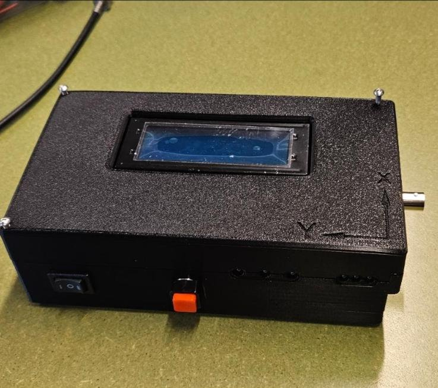
Overview
In this studio, our team of four designed, built and tested a complete step tracker. It has three parts: a custom PCB shield that sits on an Arduino Uno R3, an ADXL335 3-axis analog accelerometer, and a 3D-printed enclosure that holds everything. The ADXL335 outputs acceleration on each axis as a voltage. The shield filters those signals to remove noise before the Arduino reads them, counts steps, and works out whether the user is walking or running.
The device has these features:
- A second-order analog low-pass filter on each axis to reduce noise.
- Power from a 9 V battery or an external supply through a barrel jack, with a switch to choose between them and a diode that protects against reverse polarity.
- Status LEDs on every power rail, plus LEDs showing walking or running pace.
- A 4-layer board with dedicated ground and power planes, and test points at key locations for troubleshooting.
- A filtered Z-axis output on a BNC connector, so the signal can be viewed on an oscilloscope.
- A 20 × 4 LCD over I²C, navigated with a single button.
- On-demand 6-point calibration, a hardware self-test, and battery-voltage compensation.
- A lightweight PLA enclosure printed at 15% infill, with sandwich-style assembly so it’s easy to open and maintain.
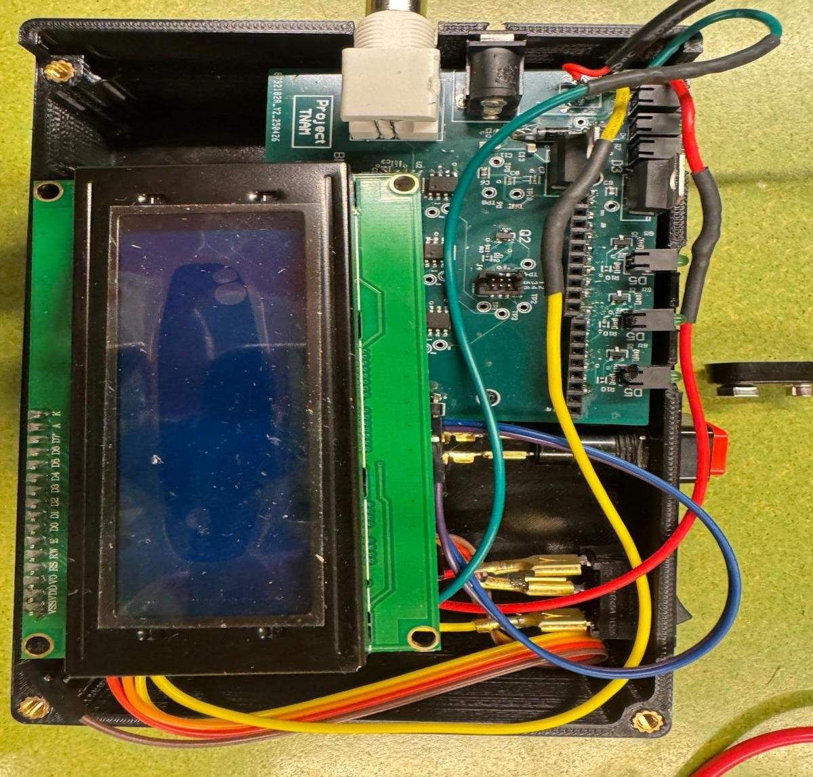
Inside the enclosure: the LCD, the custom shield, and wiring to the switch, button and battery.My Role
I worked with Nicholas Surmon, Ashwen Kugan and Thishanth Thirumurugan. My teammates each specialised in one area: electronics, embedded software or mechanical. I took an all-round role instead, overseeing design decisions across all three areas, keeping the subsystems compatible, and acting as the link between the disciplines.
I come from a mechanical background, with strengths in 3D modelling, design for manufacture and integrating mechanical assemblies in SolidWorks and Fusion 360. I chose this subject to build the electronics and embedded skills a well-rounded mechatronics engineer needs, especially the ability to design and troubleshoot circuits on my own.
- System architecture. I developed the system block diagrams and drew the top-level schematic that ties every subcircuit together.
- Electronics. I designed the accelerometer interface subcircuit, including the self-test (ST) pin driver. I selected its components and routed it on the PCB in Altium Designer.
- Embedded software. I wrote the step detection subroutine,
readStep(), which counts steps from real-time accelerometer data. - Hardware. I helped with assembly and enclosure fabrication, including soldering connectors to the PCB and preparing the 3D-printed parts.
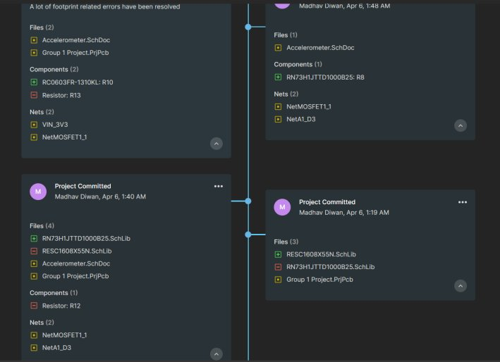
My commits to the shared Altium project.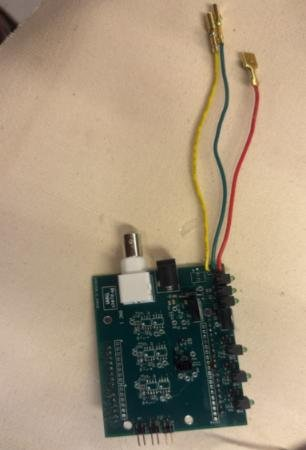
Spade connectors soldered to the PCB.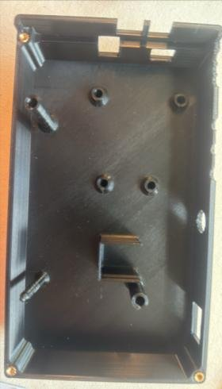
Printed base with heat-set threaded inserts for mounting the PCB.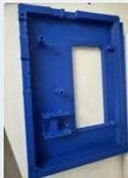
The printed enclosure lid.System Architecture
The block diagrams were the team’s high-level blueprint for how power and data flow between the battery, the shield, the accelerometer, the Arduino and the peripherals. They kept the electronics aligned with the design requirements before anyone started detailed schematics.
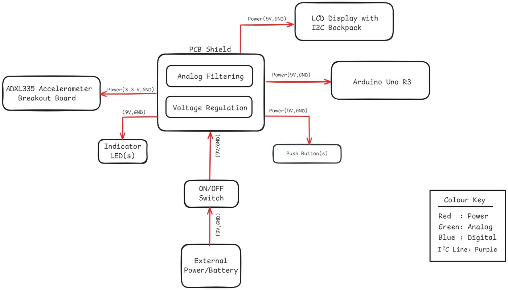
Power distribution: 9 V input, regulated down to 5 V for the Arduino, LCD and buttons, and 3.3 V for the accelerometer.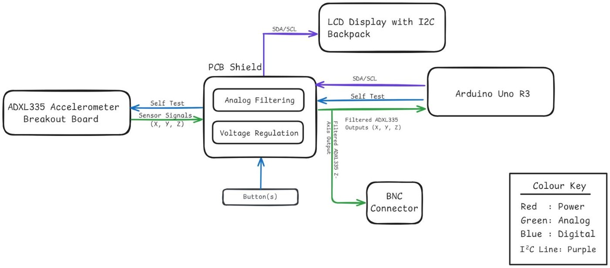
Signal flow: the sensor signals go through the analog filters to the Arduino and the BNC connector. The Arduino controls self-test and drives the LCD over I²C.I drew the top-level schematic so the whole circuit could be split into separate sheets: accelerometer, filter, power, MCU and peripherals. It shows how those blocks connect. Teammates could then work on their own sheets in parallel, and debugging was easier because every connection between blocks was clearly defined. The filter sheet is instantiated three times, once for each axis.
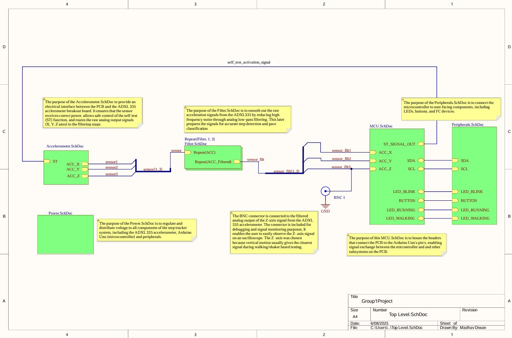
Top-level schematic (drawn by me).ST Pin Driver Circuit
My main hardware contribution was the circuit that enables the ADXL335’s self-test mode. When the ST pin is pulled high (≥ 2.4 V), the sensor applies a known internal electrostatic force to its sensing element. That produces a predictable voltage shift on each axis: typically −325 mV on X, +325 mV on Y and +550 mV on Z. Measuring those shifts checks the sensor’s mechanical and electrical health without having to move it.
The challenge is voltage. The ADXL335 datasheet says the ST pin must never see more than Vs + 0.3 V, about 3.6 V. An Arduino GPIO pin outputs 5 V, so driving the ST pin directly could damage the sensor. We therefore wrote the requirement for a ~3 V test-pin voltage into the requirements list, and I designed a switch that lets the 5 V Arduino control a 3.3 V signal.
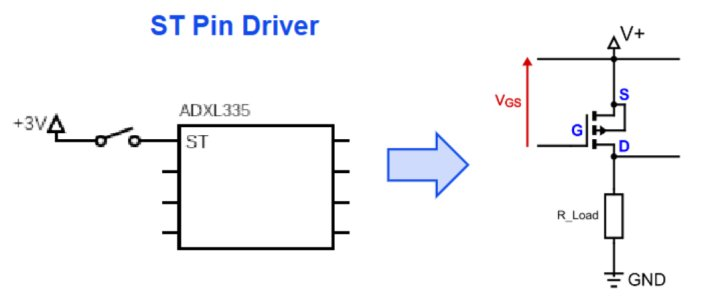
Concept: replace a simple switch to +3 V with a P-channel MOSFET high-side switch.How it works
A P-channel MOSFET (Q2) acts as a high-side switch between the 3.3 V rail and the ST pin:
- Arduino pin LOW (0 V). VGS = 0 − 3.3 = −3.3 V, so the MOSFET turns fully on and connects 3.3 V to the ST pin. Self-test is active.
- Arduino pin HIGH. The MOSFET turns off and self-test is inactive.
- R12 (100 Ω gate resistor). Limits sudden current changes during switching, protecting the Arduino pin.
- R13 (10 kΩ pull-up). Keeps the MOSFET off by default, so self-test only runs when the Arduino deliberately pulls the gate low.
The sensor breakout plugs into a 6-pin 1.27 mm Amphenol Minitek127 board-to-board connector. Test points TP1–TP4 give direct access to the three axis signals and the ST line for debugging.
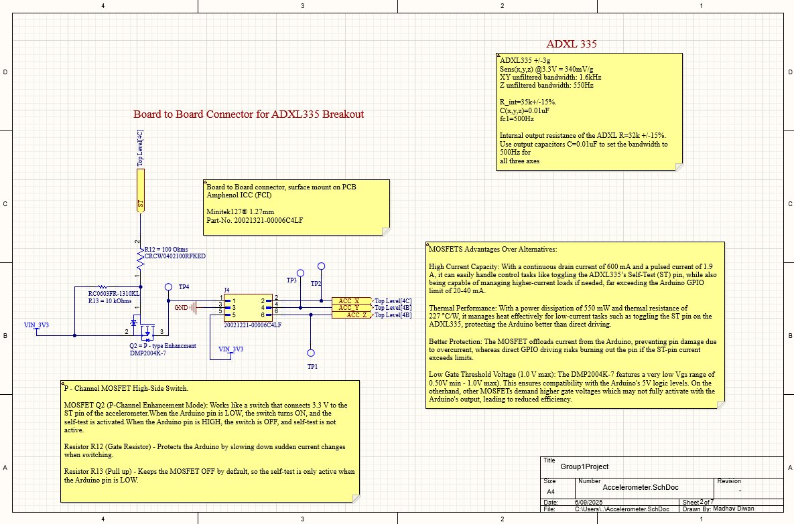
Accelerometer interface schematic, with the ST pin driver on the left.Choosing the MOSFET
The two key parameters were the gate threshold voltage, which must be low enough for the MOSFET to turn fully on at VGS = −3.3 V, and the maximum drain current, which must comfortably exceed the ST pin’s ~60 µA draw. I used ChatGPT to shortlist logic-level P-channel parts, then checked my choice against the manufacturer’s datasheet. I chose the Diodes Inc. DMP2004K-7 (SOT-23):
| Parameter | DMP2004K-7 | Requirement |
|---|---|---|
| Drain-source voltage | −20 V | > 3.3 V |
| Continuous drain current | −600 mA (−1.9 A pulsed) | > 60 µA |
| Gate threshold voltage | −0.5 to −1.0 V | Fully on at −3.3 V |
| Gate-source voltage limit | ±8 V | Safe with 5 V logic |
With VGS = −3.3 V, well beyond the −1.0 V maximum threshold, the MOSFET operates in its fully-on region. Its current rating gives a very large margin over the microamp-level load.
Learning from tutor feedback
The first version of this circuit had two problems, which a tutor spotted during a lab review:
- Wrong MOSFET. I had originally used an IRF9Z24SPBF, which isn’t a logic-level MOSFET. It doesn’t turn on fully with the gate voltages a microcontroller can provide.
- Wrong supply rail. The MOSFET source was connected to 5 V instead of 3.3 V. That would have driven the ST pin above the sensor’s supply voltage and could have permanently damaged it.
I replaced the MOSFET with the logic-level DMP2004K-7 and moved its source to the 3.3 V rail, matching the sensor’s supply. Both mistakes taught me to check every interface voltage against the datasheet’s absolute maximum ratings, not just the nominal values.
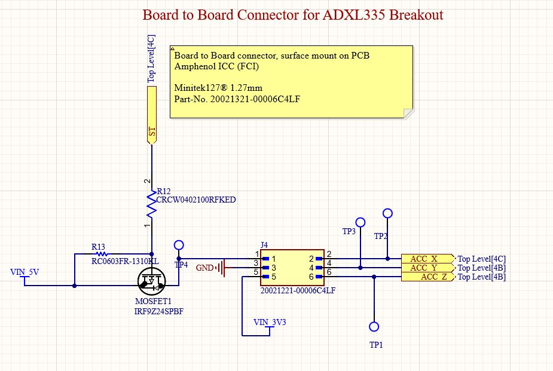
The original schematic, with the IRF9Z24SPBF and a 5 V source connection.The Rest of the Shield
Power supply
A three-position switch selects between the 9 V battery and the barrel-jack input, and a 1N4001 diode protects against reverse polarity. Four 10 µF capacitors decouple the input. An L7805 regulator steps the input down to 5 V for the Arduino and peripherals. It accepts up to 35 V in and has thermal and short-circuit protection. An LF33CV low-dropout regulator then makes 3.3 V for the accelerometer and filters. Each rail has an indicator LED, with a resistor sized to keep it well inside the LED’s 20 mA rating:
| Rail | Resistor | Voltage across resistor | LED current |
|---|---|---|---|
| 9 V | 715 Ω | 6.8 V | 9.51 mA |
| 5 V | 300 Ω | 2.8 V | 9.33 mA |
| 3.3 V | 150 Ω | 1.1 V | 7.33 mA |
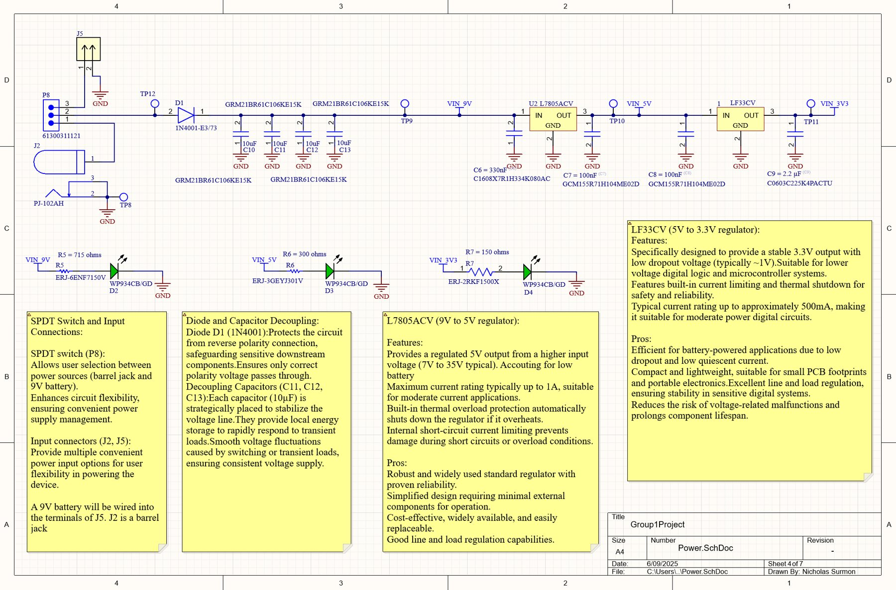
Power supply schematic (designed by Nicholas Surmon).Analog filter
Each axis passes through a unity-gain buffer and then a second-order Butterworth low-pass filter in a Sallen-Key topology, built around MCP6031 rail-to-rail op-amps. The buffer is needed because the ADXL335 has about 32 kΩ of internal output resistance. Connecting the filter directly would form a voltage divider and shift the cut-off frequency. A Butterworth filter has a maximally flat passband, and its −40 dB/decade roll-off is plenty for this application.
- Cut-off frequency, about 32 Hz. We based this on Usain Bolt’s 100 m record. Assuming an exaggerated 1.5 m per step, he takes about 150 steps in 9 seconds, or 16.7 Hz, so human steps are far below 32 Hz. That cut-off keeps fast motion while removing higher-frequency noise. With R1 = 4.02 kΩ, R2 = 4.48 kΩ, C1 = 1.0 µF and C2 = 1.5 µF, fc = 1 / (2π√(R1R2C1C2)) ≈ 31–32 Hz. The ideal 1.4 µF capacitor couldn’t be sourced, so we used 1.5 µF.
- Gain of 1.24. At its maximum output the ADXL335 reaches about 2.58 V (3.6 g × 0.3 V/g + 1.5 V offset). A gain of 1 + R3/R4 = 1 + 2490/604 = 1.24 scales that up to about 3.2 V, using more of the ADC range without clipping.
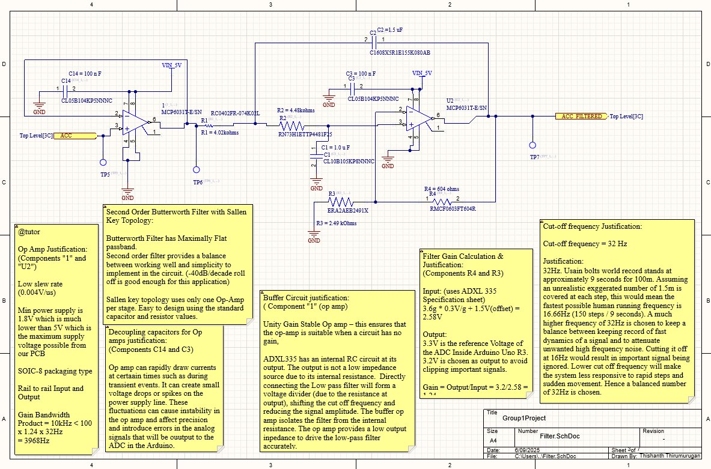
Analog filter schematic (designed by Thishanth Thirumurugan).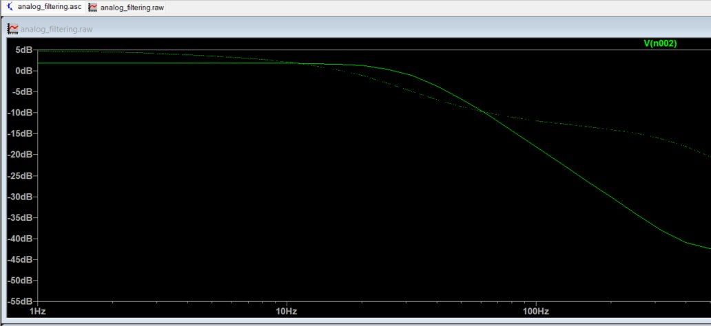
Simulated frequency response.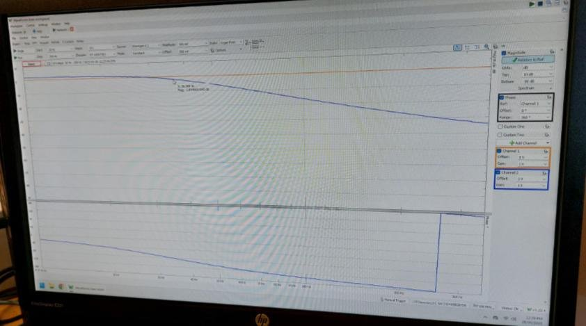
Measured frequency response on the real board.On the real board, the measured cut-off was 35.5 Hz on X and Y and 36.3 Hz on Z, with a gain of 1.24 on all three axes. That’s close to the design values. The pace LEDs are switched by N-channel MOSFET (DMN2005K-7) low-side drivers, so the Arduino pins never supply LED current directly.
PCB Design
We chose a 4-layer board instead of a standard 2-layer one, on a tutor’s advice. The two inner layers are solid ground and power planes. They give every signal a short, clean return path, act as shields against electromagnetic interference, and free up the outer layers for routing. A 4-layer board costs more, but the improvement in signal integrity for the sensitive analog lines justified it.
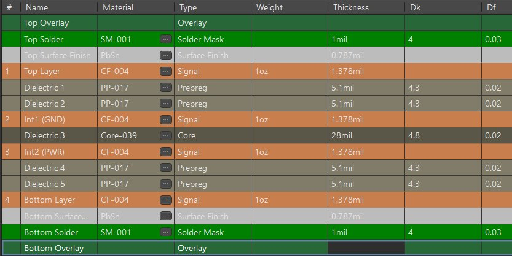
Layer stackup: signal / GND / power / signal.We set design rules to match the manufacturer’s capabilities and each net’s electrical needs:
| Rule | Value | Reason |
|---|---|---|
| Minimum clearance | 6 mil (0.15 mm) | Manufacturer’s minimum tolerance; prevents shorts |
| Power track width | 20 mil (0.50 mm) | Carries higher current with less voltage drop and heat |
| Ground track width | 20 mil (0.50 mm) | Low-resistance, stable return paths; better EMI performance |
| Signal track width | 8 mil (0.20 mm) | Balances signal integrity, space and manufacturability |
| Via | 0.6 mm diameter, 0.3 mm hole | Reliable layer transitions within standard fabrication limits |
| Hole size | 0.3–25.4 mm | Fits both vias and through-hole parts |
I defined an Altium “room” for the ST pin driver, so its components stayed grouped together during layout. I then placed and routed the MOSFET, resistors, connector and test points to keep traces short and direct.
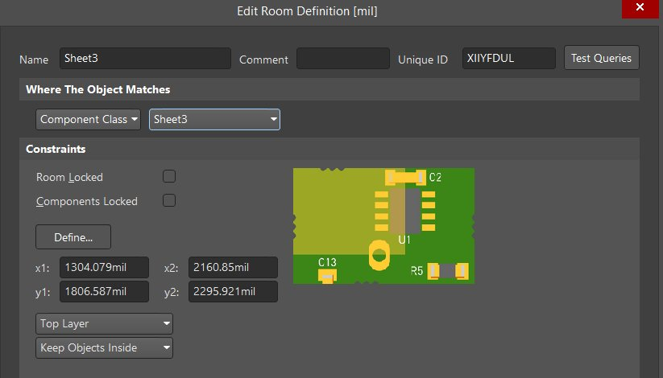
Room definition for the ST pin driver.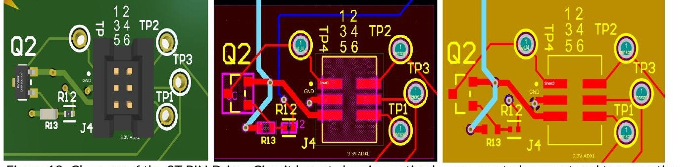
My ST pin driver layout: 3D, all layers, and top copper.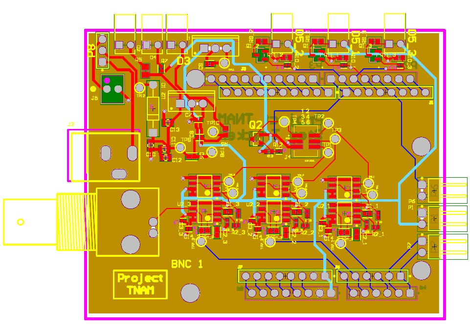
Full board layout.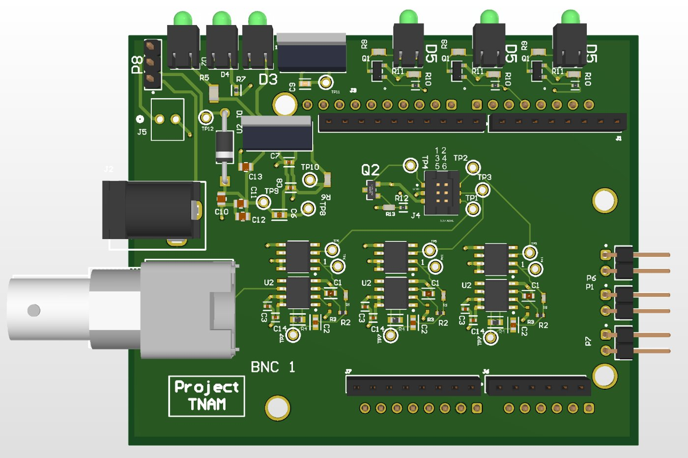
3D render of the finished shield.Enclosure and Assembly
The enclosure, designed by Ashwen Kugan, is a two-part PLA print. Electronics stack inside it in layers: the Arduino at the bottom, the shield on top of it, then the LCD. Nine M3 brass heat-set inserts, pressed in at 350–400 °C, give strong threads for the M3 bolts that hold the boards and the lid. The power switch and push button mount in side cutouts, and a holder keeps the 9 V battery clear of the wiring. Arrows on the lid mark the X and Y sensor axes.
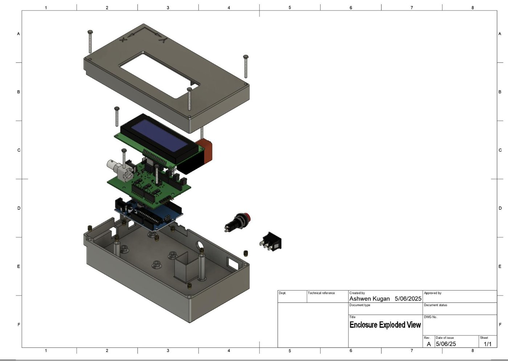
Exploded view of the enclosure.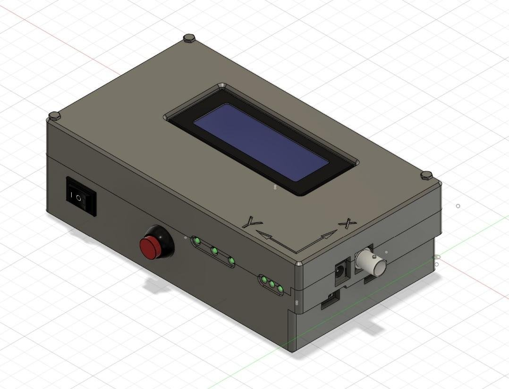
Closed enclosure model.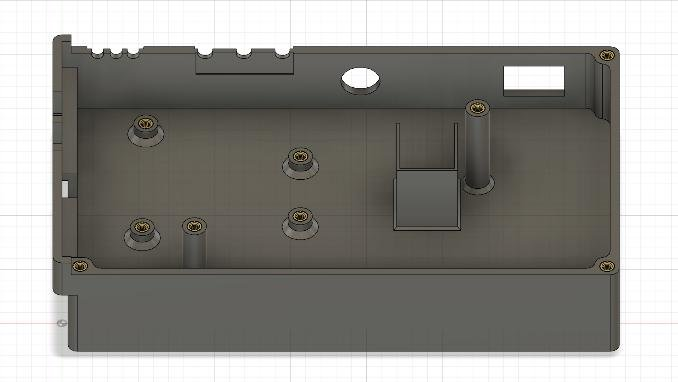
Assembly step 1: base with inserts.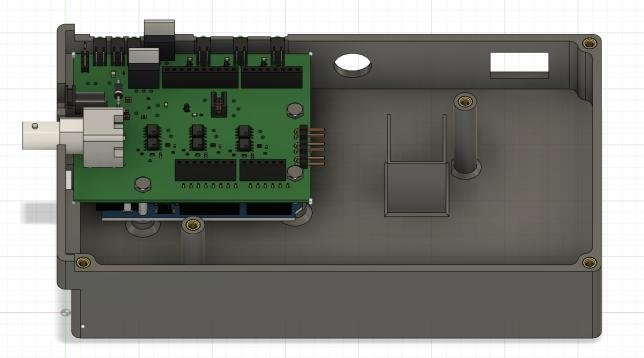
Assembly step 2: Arduino and shield mounted.Embedded Software
The firmware runs a fully non-blocking main loop. Sensor readings, display updates, LED blinking and self-tests all run together, with none of them waiting on the others. A single button on pin 3 controls three states:
| State | What it shows or does | Button |
|---|---|---|
| Main screen | Step count, pace (walking/running), calibrated X/Y/Z acceleration and reference voltage | Press: self-test. Hold ≥ 3 s: calibration |
| Self-test | Pass/fail result and the X, Y, Z voltages before and after self-test | Press: return to main screen |
| Calibration | Guides the user through placing each axis up and down in turn | Press: next orientation; return to main screen when finished |
- Calibration. A 6-point routine records the voltage with each axis pointing up and then down. From those readings it calculates each axis’s zero-g offset and sensitivity, which vary between individual sensors.
- Battery compensation. During integration, readings drifted. A multimeter showed the Arduino’s 5 V pin at only 3.8 V because the battery was going flat, and that lowered the ADC reference. The fix was to measure the actual supply voltage against the chip’s fixed 1.1 V internal reference and use it in every conversion.
- Pace identification. The Z-axis is sampled at 20 Hz into a 64-sample buffer. The firmware applies a Hamming window and runs an FFT to find the dominant frequency. Above 3 Hz the pace is classed as running, and at or below as walking. The pace LEDs on pins 5 and 6 show the result, and a heartbeat LED on pin 4 blinks at 2 Hz.
- Self-test. The firmware toggles the ST pin through my driver circuit and checks that each axis shifts by an amount within the datasheet range. It runs five iterations, and all five must pass.
Step Detection
I wrote the readStep() subroutine, which detects individual steps from peaks in the Z-axis acceleration. To choose a threshold, I recorded acceleration data with the Phyphox app on a phone while walking. Over 10 steps, the Z-axis and total acceleration showed clear, regular peaks between 12 and 15 m/s². I set the threshold at 12.5 m/s², which catches real steps but ignores small hand movements and noise.
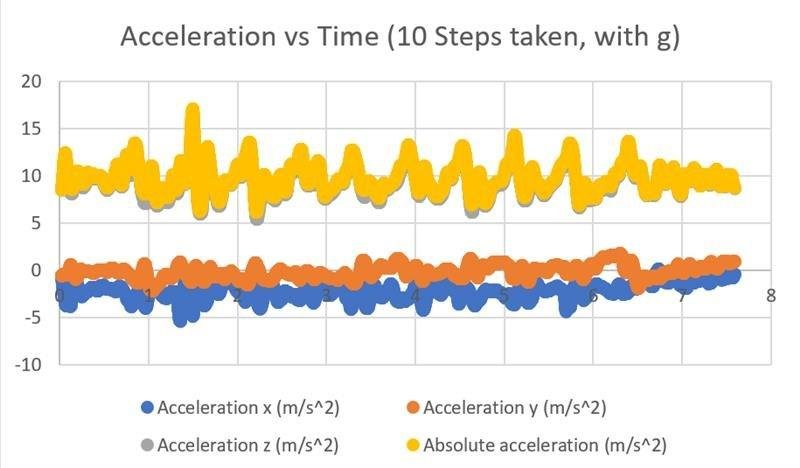
Acceleration over 10 steps, recorded with Phyphox. Each step appears as a peak of about 12–15 m/s².The algorithm keeps the five most recent samples in a circular buffer. It treats the middle sample as a candidate peak, which must be larger than every other sample in the buffer, a true local maximum. A step is counted only if the candidate is a local maximum, exceeds 12.5 m/s², and at least 200 ms have passed since the last step. That debounce stops one long, high-acceleration footfall from being counted twice. Threshold-based peak detection is simple and cheap to run, which suits a low-power microcontroller and avoids complex digital filtering.
void readStep() {
if (!accelBufferFilled) return;
// Use the middle sample as the candidate peak.
int midIndex = accelBufferSize / 2;
float candidate = fabs(accelBuffer[midIndex]);
// Check it is the highest value in the buffer.
bool isPeak = true;
for (int i = 0; i < accelBufferSize; i++) {
if (i != midIndex &&
candidate <= fabs(accelBuffer[i])) {
isPeak = false;
break;
}
}
// Count a step if it is a valid peak above the
// threshold and the debounce timer is ready.
if (isPeak && candidate > accStepThreshold &&
stepDebounceTimer.ready()) {
steps++;
stepDebounceTimer.update();
}
}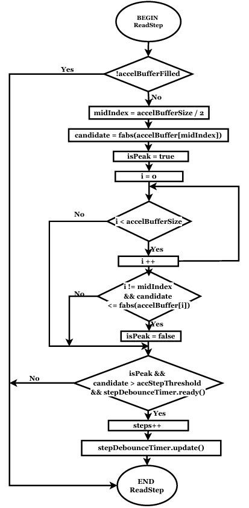
Flowchart ofreadStep().
The first version counted steps while the device sat still on a desk, because noise kept crossing the threshold. Requiring a true local maximum within the buffer, together with the 12.5 m/s² minimum, fixed that. Some real steps were then being missed, so I tuned the debounce time and buffer size until accuracy was within tolerance.
Testing and Results
We brought up the board one subsystem at a time against a structured test plan. The lab supply was current-limited to 500 mA, and each subcircuit was populated and verified before moving on.
| Test | Measured | Result |
|---|---|---|
| 5 V rail | 4.9 V | Pass |
| 3.3 V rail | 3.29 V | Pass |
| ST pin driver, standalone | 3 V at the ST pin when the gate is low; off when high | Pass |
| 0 g bias, all axes (after 1.24 gain) | 2.05 V (1.65 V at the sensor) | Pass |
| Self-test output change, with gain | X 450 mV, Y 502 mV, Z 900 mV | Pass |
| RMS noise, before / after filter | X 1.0 / 0.4 mV, Y 1.0 / 0.3 mV, Z 2.0 / 0.3 mV | Pass |
| Sensitivity, with gain | X 371, Y 382, Z 370 mV/g | Pass |
| Current draw, without / with Arduino | 30 mA / 120 mA (limit 250 mA) | Pass |
The filter cut RMS noise by more than half on every axis, and by about 85% on Z. The sensitivity values match the ADXL335’s nominal 300 mV/g once the filter’s 1.24 gain is included.
| Software test | Result |
|---|---|
| No steps counted while idle | Pass |
| Walking accuracy (counted manually) | 35 / 39 steps (~10% error, within tolerance) |
| Only one step counted per footfall (debounce) | Pass |
| Vigorous shaking doesn’t produce false steps or crash the tracker | Pass |
| Self-test, including while shaking | 5 / 5 iterations pass |
| Self-test with X and Y inputs swapped | Fails, as intended |
| Reading flat after calibration (target 0, 0, −9.8 m/s²) | 0.2, −0.1, −9.7 m/s² |
| Calibration on a low battery (3.6 V reference) | Same readings, Pass |
| Walking/running identification, LEDs and display | Pass |
| Button: press vs hold, no accidental fast switching | Pass |
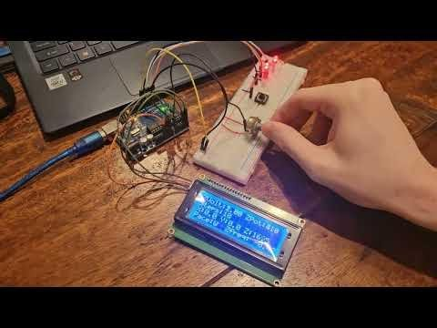
Breadboard prototype used for early firmware testing.What I Learned
- Read the absolute maximum ratings. The ST pin driver taught me to check every interface voltage against the datasheet limits. A 5 V logic signal on a 3.6 V-max pin is an easy mistake to make, and it can permanently damage a part.
- Logic-level MOSFETs. Choosing a MOSFET properly took me through gate threshold voltage, drain current, power dissipation and VGS limits. Using AI tools to build a shortlist was useful, but the final choice still had to be confirmed against the real datasheet.
- Data-driven algorithm design. Recording real walking data before picking a threshold, and then testing edge cases like idling and shaking, made the step counter far more robust than guessing values would have.
- Layout matters. Ground and power planes, sensible design rules and room-based placement all contribute to clean analog signals.
- Integration is its own skill. Taking a cross-discipline role showed me how often problems sit at the boundaries: a falling battery voltage affecting ADC readings,, or a 5 V rail wired to a 3.3 V sensor pin. A mechanical engineer who understands the electronics and the code can catch them early.